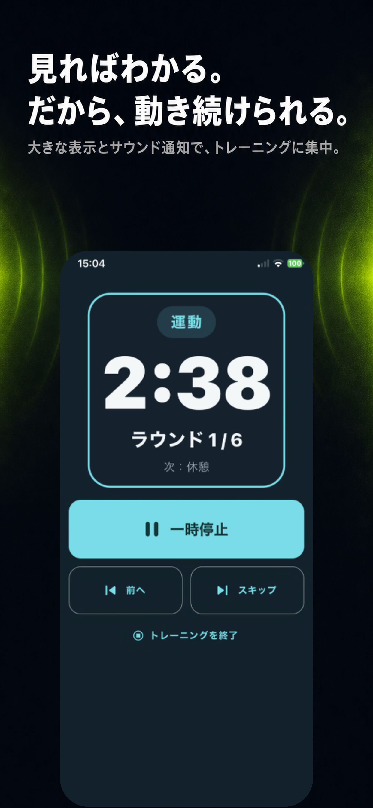
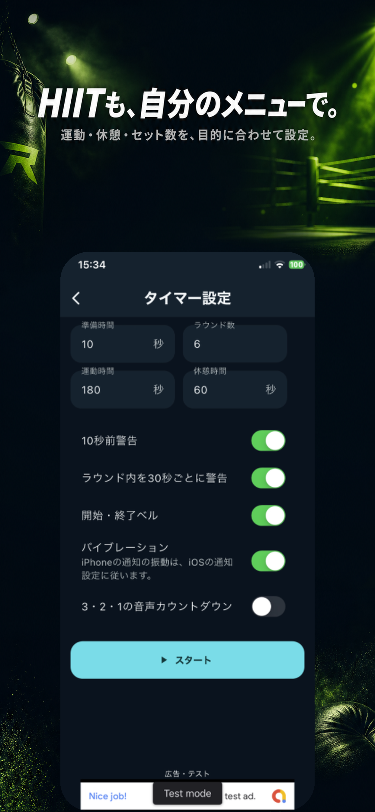

01
無料でダウンロード
集中を、
ラウンドに変える。
Bellstrideは、ボクシング・HIIT・Tabataのための
ラウンドタイマーアプリ。


FOCUS
時間を気にするのではなく、
ラウンドに集中する。
残り時間、現在のラウンド、次の休憩を大きく表示。必要な情報がひと目でわかるから、トレーニングの流れを止めません。

FLEXIBILITY
ボクシングのラウンドも、
HIITのインターバルも。
- 01運動・休憩時間
- 02ラウンド数
- 03ベル・事前警告
- 04バイブレーション
USE CASES
自分のラウンドで、
トレーニングを続ける。
Bellstrideは、ラウンドと休憩を繰り返すさまざまなトレーニングに対応します。
- ボクシングシャドー・サンドバッグ・ミット打ち
- HIIT目的に合わせたインターバルトレーニング
- Tabata短時間・高強度のワークアウト
- 自宅トレーニング自分だけの運動・休憩・ラウンド設定
HOW IT WORKS
準備は、数タップ。
02
整える
03
始める
FAQ
Bellstrideについて
Bellstrideはどんなアプリですか？
Bellstrideは、ボクシング・HIITなどのインターバルトレーニング向けラウンドタイマーアプリです。
Bellstrideは無料で使えますか？
Bellstrideは無料でダウンロードできます。
ボクシング以外にも使えますか？
はい。HIIT、Tabata、自宅でのインターバルトレーニングなど、運動と休憩を繰り返すメニューに使えます。
何を設定できますか？
運動時間、休憩時間、ラウンド数に加え、開始・終了ベル、事前警告、バイブレーションなどを設定できます。
Tabataタイマーとして使えますか？
はい。Tabataメニューを選び、運動時間、休憩時間、ラウンド数を目的に合わせて設定できます。
START YOUR ROUND
次のラウンドを、
今すぐ始めよう。
無料でダウンロード